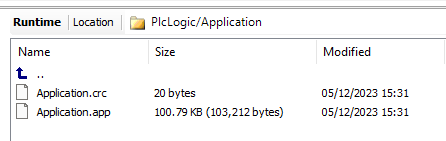
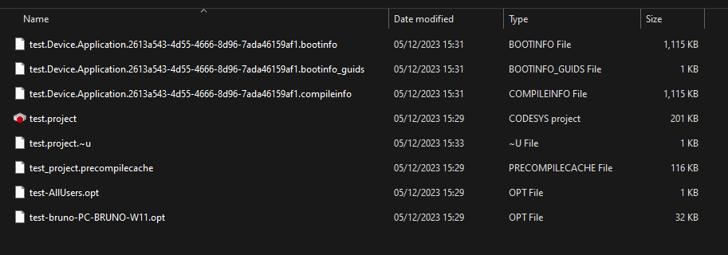

Description :
Fichiers d'un projet CoDeSys sur PC et dans l’automate.
Dans l'automate

- Fichier “.app” (The boot application file “.app” is created on the controller…)
- Fichier “.crc” (with the checksum of the boot application “.crc”)
Sur le PC

- Fichier “.project” (Code source sur lequel on travaille avec CoDeSys)
- Fichiers “.opt” (Deux fichiers liés au projet “.project”)
- Fichier “.bootinfo” (créé lors de la premiere compilation et transfert dans l’automate)
- Fichier “.bootinfo_guids” (créé lors de la premiere compilation et transfert dans l’automate)
- Fichier “.compileinfo” (créé lors de la premiere compilation et transfert dans l’automate)